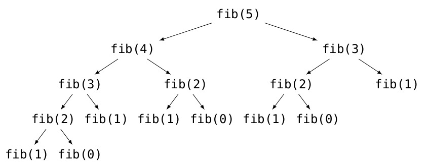

Contenidos | Anterior (1 Introducción) | Próximo (3 Diseño de algoritmos recursivos)
11.2 Intro a la Recursión
Para esta sección y las dos siguientes hay un video donde introducimos el tema de recursión y vemos algunos ejemplos.
La recursión y cómo puede ser que funcione
Estamos acostumbrados a escribir funciones que llaman a otras funciones. Pero lo cierto es que nada impide que en Python (y en muchos otros lenguajes) una función se llame a sí misma. Y lo más interesante es que esta propiedad, que se llama recursión, permite en muchos casos encontrar soluciones muy elegantes para determinados problemas.
En materias de matemática se estudian los razonamientos por inducción para probar propiedades de números enteros y la recursión no es más que una generalización de la inducción a más estructuras: las listas, las cadenas de caracteres, las funciones, etc.
A continuación estudiaremos diversas situaciones en las cuales aparece la recursión, veremos cómo es que esto puede funcionar, algunas situaciones en las que es conveniente utilizarla y otras situaciones en las que no.
Una función recursiva matemática
Es muy común tener definiciones inductivas de operaciones. Un caso paradigmático es la del factorial. Recordemos que el factorial de un número entero positivo n es el producto de todos los números entre 1 y n. La definición usual, inductiva, es la siguiente:
1! = 1
n! = n * (n-1)! si n>1
Este tipo de definición se traduce naturalmente en una función en Python:
def factorial(n):
"""Precondición: n entero positivo
Devuelve: n!"""
if n == 1:
return 1
return n * factorial(n - 1)
Ésta es la ejecución del factorial para n = 1 y para n = 3.
>>> factorial(1)
1
>>> factorial(3)
6
El sentido de la instrucción
n * factorial(n - 1) es exactamente el mismo que el de la
definición inductiva: para calcular el factorial de n se debe multiplicar
n por el factorial de n-1.
Dos piezas fundamentales para garantizar el funcionamiento de este programa son:
- Que se defina un caso base (en este caso la indicación no recursiva de cómo calcular
factorial(1)). - Que el argumento de la función respete la precondición de que
ndebe ser un entero mayor o igual que 1.
No es increíble que esto pueda funcionar adecuadamente en un lenguaje de programación?
Ejercicio 11.1:
Para poder analizar qué sucede a cada paso de la ejecución de la función, utilizaremos una versión más detallada del mismo código, en la que el resultado de cada paso se asigna a una variable.
def factorial(n):
if n == 1:
r = 1
return r
f = factorial(n-1)
r = n * f
return r
Esta porción de código funciona exactamente igual que la anterior, pero nos
permite ponerles nombres a los resultados intermedios de cada operación
para poder estudiar qué sucede a cada paso. Analizá con tu debugger la ejecución de factorial(3).
Algoritmos recursivos y algoritmos iterativos
Llamaremos algoritmos recursivos a aquellos que realizan llamadas recursivas para llegar al resultado, y algoritmos iterativos a aquellos que llegan a un resultado a través de una iteración mediante un ciclo definido o indefinido.
Todo algoritmo recursivo puede expresarse como iterativo y viceversa. Sin embargo, según las condiciones del problema a resolver podrá ser preferible utilizar la solución recursiva o la iterativa.
Una posible implementación iterativa de la función factorial
vista anteriormente sería:
def factorial(n):
"""Precondición: n entero positivo
Devuelve: n!"""
fact = 1
for num in range(n, 1, -1):
fact *= num
return fact
Se puede ver que en este caso no es necesario incluir un caso base, ya que el mismo ciclo incluye una condición de corte, pero que sí es necesario incluir un acumulador, que en el caso recursivo no era necesario.
Por otro lado, si hiciéramos el seguimiento de esta función, como se hizo
para la versión recursiva, veríamos que la pila de ejecución siempre tiene un
único marco, en el cual se van modificando los valores de num y
fact.
Es por esto que, en general, las versiones recursivas de los algoritmos utilizan más memoria (ya que la pila de ejecución se guarda en memoria) pero suelen ser más elegantes.
Un ejemplo de recursión elegante
Consideremos ahora otro problema que puede ser resuelto de forma elegante mediante un algoritmo recursivo.
La función potencia(b, n) que vimos cuando hablamos de invariantes en la Sección 7.5,
realiza n iteraciones para poder obtener el valor de b^n.
Sin embargo, es posible optimizarla teniendo en cuenta los siguientes hechos:
b^n = b^(n/2) * b^(n/2) si n es par, y
b^n = b^((n-1)/2) * b^((n-1)/2) * b si n es impar.
Estas ecuaciones nos permiten diseñar un algoritmo muchísimo más eficiente. Esta situación guarda cierta analogía con el problema de la búsqueda en una lista ordenada. La idea es, en un paso, reducir el tamaño del problema a la mitad.
Antes de programar cualquier función recursiva es necesario decidir cuál
será el caso base y cuál el paso recursivo. Para esta función,
tomaremos n=0 como el caso base (devolveremos 1). El paso
recursivo tendrá dos partes, correspondientes a los dos posibles grupos de
valores de n.
def potencia(b,n):
"""Precondición: n >= 0
Devuelve: b^n."""
if n <= 0:
# caso base
return 1
if n % 2 == 0:
# caso n par
p = potencia(b, n // 2)
return p * p
else:
# caso n impar
p = potencia(b, (n - 1) // 2)
return p * p * b
El uso de la variable p en este caso no es optativo, ya que
es una de las ventajas principales de esta implementación: se aprovecha el
resultado calculado en lugar de tener que calcularlo dos veces. Vemos que
este código funciona correctamente:
>>> potencia(2, 10)
1024
>>> potencia(3, 3)
27
>>> potencia(5, 0)
1
El orden de las llamadas, haciendo un seguimiento simplificado de la función será:
potencia(2, 10)
potencia(2, 5)
potencia(2, 2)
potencia(2, 1)
potencia(2, 0)
return 1
return 1 * 1 * 2
return 2 * 2
return 4 * 4 * 2
return 32 * 32
return 1024
Se puede ver, entonces, que para calcular 2^10 se realizaron 5 llamadas a
potencia, mientras que en la implementación más sencilla se
realizaban 10 iteraciones. Y esta optimización será cada vez más importante
a medida que aumenta n: por ejemplo para n = 100 se
realizarán 8 llamadas recursivas, y para n = 1000 11 llamadas.
Es posible transformar este algoritmo recursivo en un algoritmo iterativo. Para ello es necesario simular la pila de llamadas a funciones mediante una pila que almacene los valores que sean necesarios. En este caso, lo que apilaremos será si el valor de n es par o no.
def potencia(b, n):
"""Precondición: n >= 0
Devuelve: b^n."""
pila = []
while n > 0:
if n % 2 == 0:
pila.append(True)
n //= 2
else:
pila.append(False)
n = (n - 1) // 2
p = 1
while pila:
es_par = pila.pop()
if es_par:
p *= p
else:
p *= p * b
return p
Como se puede ver, este código es mucho más complejo que la versión recursiva. Esto se debe a que utilizando recursión el uso de la pila de llamadas a funciones oculta el proceso de apilado y desapilado y permite concentrarse en la parte importante del algoritmo.
Un ejemplo de recursión poco eficiente
Del ejemplo anterior se podría deducir que siempre es mejor utilizar algoritmos recursivos; sin embargo --como dijimos antes-- cada situación merece ser analizada por separado.
Un ejemplo clásico en el cual la recursión tiene un resultado muy poco eficiente es el de los números de Fibonacci. La sucesión de Fibonacci está definida por la siguiente relación:
F(0) = 0
F(1) = 1
F(n) = F(n - 1) + F(n - 2) si n > 1
Los primeros números de esta sucesión son: 0, 1, 1, 2, 3, 5, 8,
13, 21, 34, 55. La sucesión tiene numerosas aplicaciones en computación y matemática y también aparece en configuraciones biológicas, como en las flores de girasoles, en la configuración de los ananás o las piñas de las coníferas, en la reproducción de conejos, etc. La siguiente imagen muestra su uso para aproximar una espiral áurea:

Dada la definición recursiva de la sucesión, puede resultar muy tentador
escribir una función que calcule en valor de fib(n) de la siguiente
forma:
def fib(n):
"""Precondición: n >= 0.
Devuelve: el número de Fibonacci número n."""
if n == 0:
res = 0
elif n == 1:
res = 1
else:
res = fib(n - 1) + fib(n - 2)
return res
Si bien esta implementación es muy sencilla y elegante, también es extremadamente poco eficiente: para calcular fib(n - 1) es necesario calcular
fib(n - 2), que luego volverá a ser calculado para obtener el valor
fib(n).
Por ejemplo, una simple llamada a fib(5), generaría
recursivamente todas las llamadas ilustradas en el siguiente gráfico. Puede verse que muchas de estas llamadas están repetidas, generando un
total de 15 llamadas a la función fib, sólo para devolver el
valor F(5).

En este caso, será mucho más conveniente utilizar una versión iterativa, que vaya almacenando los valores de las dos variables anteriores a medida que los va calculando.
def fib(n):
"""Precondición: n >= 0.
Devuelve: el número de Fibonacci número n."""
if n == 0 or n == 1:
return n
ant2 = 0
ant1 = 1
for i in range(2, n + 1):
fibn = ant1 + ant2
ant2 = ant1
ant1 = fibn
return fibn
Vemos que el caso base es el mismo para ambos algoritmos, pero que en el
caso iterativo se calcula el número de Fibonacci de forma incremental, de
modo que para obtener el valor de fib(n) se harán n-1
iteraciones.
En resumen: vimos que un algoritmo recursivo no es necesariamente mejor que uno iterativo, ni viceversa. En cada situación es conveniente analizar cuál algoritmo provee una solución más clara y eficiente.
Contenidos | Anterior (1 Introducción) | Próximo (3 Diseño de algoritmos recursivos)